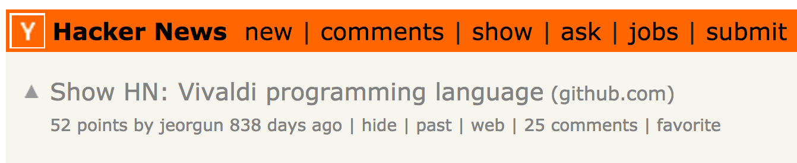
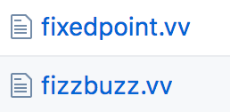
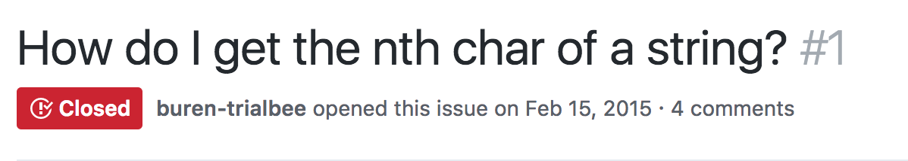
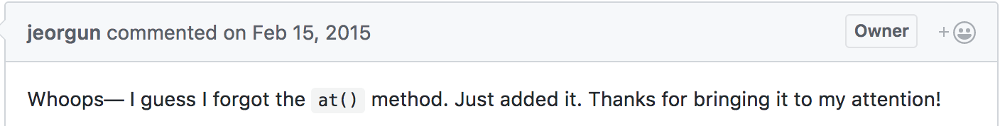
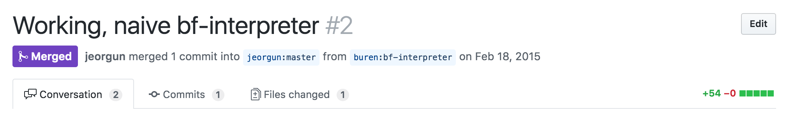
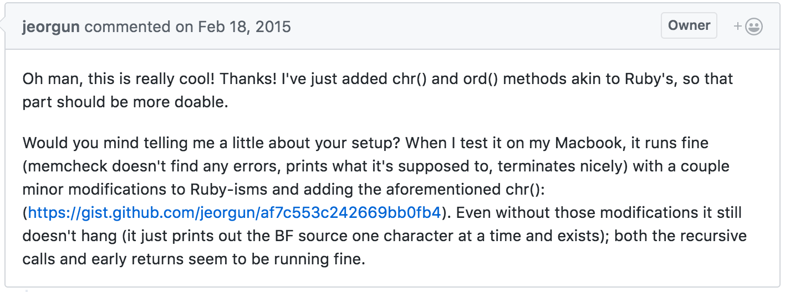

include OpenHack
author = Presenter.new(:buren)
slides = OpenSource::Slides.new
wait until author.ready?
author.present(slides) do |slide|
print slide
any_questions? if slide.last?
end
http://jacobburenstam.com/openhack-open-source


Guide | Empower | Connect
Slides
Have you contributed to Open source?
Do you use open source?
Disclaimer
- Personal opinions, not the opinions of my employer.
- YMMV - Your mileage may vary)
- IANAL - I’m not a lawyer
Jacob Burenstam
- Open source tinkerer
- Useless code enthusiast
- Co-Founder and CTO at Just Arrived
I love open source

This slide deck is open source
Just Arrived is open source 
P.S We’re hiring
@buren open source
- Active in open source for over 5 years
- Contributed to >30 OSS projects
- Open source libs/projects of my own
- Just Arrived is by far the largest

- Just Arrived is by far the largest
Hackathons
- Android TV, Hackathon winner @ Google
- “Read automatic captions and use NLP to link various topics to Wikipedia, Maps, IMDB etc”
- Just Arrived got started at OpenHack!
Agenda
Intro
- What is open source?
- Licenses, MIT, GPL etc

- Richard Stallman & Linus Torvalds

What is open source?
What is open source?- Licenses, MIT, GPL etc
- Richard Stallman & Linus Torvalds
Licenses, MIT, GPL etc
What is open source?Licenses, MIT, GPL etc- Richard Stallman & Linus Torvalds
Richard Stallman & Linus Torvalds
Completely different views on open source. Even though both are considered open source “heroes”.
I didn’t want code, I wanted comments. - Linus Torvalds
If you use a proprietary program, you’re defenceless. - Richard Stallman
What is open source?Licenses, MIT, GPL etcRichard Stallman & Linus Torvalds
Questions or comments?
Open Source Business
Open Source Business
- Open source companies

- Sentry (sentry.io)
- Just Arrived
- Discourse
- Neo4J
- …
- Open source risks?

- The case of hacking Instagram
- https://exfiltrated.com/research-Instagram-RCE.php
- AWS/Slack tokens
Open source companies
- Sentry (sentry.io)
- Just Arrived
- Discourse
- Neo4J
- …
Open source companies- Open source risks?
- The case of hacking Instagram
- https://exfiltrated.com/research-Instagram-RCE.php
- AWS/Slack tokens
Open source risks?
- The case of hacking Instagram
- https://exfiltrated.com/research-Instagram-RCE.php
- AWS/Slack tokens
Open source companiesOpen source risks?
Questions or comments?
Open Source Motivation 
Open Source Motivation
- Why are all these developers giving away their code?

- Hobbyist, Hackers, Tinkerers
- Curiosity
- Its fun and unexpected stuff happens!
- Writing a brainfuck interpreter in a 20-day-old language
- Archiving certain USGOV sites in response to Trump
Why are all these developers giving away their code?
- Hobbyist, Hackers, Tinkerers
- Curiosity
What is your motivation?
Its fun and unexpected stuff happens!
Two stories of my own
Writing a brainfuck interpreter in a 20-day-old language.
Vivaldi - Hacker News

Current examples

I wonder if I can write a
brainfuck interpreter with Vivaldi
🤔
Vivaldi
Github issue #1





Archiving certain USGOV sites in response to Trump
Professors were scared that the Trump administration would withdraw funding for certain gov-sites.
They started mass-archiving sites to the Internet Archive.
github.com/buren/wayback_archiver
venturebeat.com: 200TB gov-data backed up to Internet Archive
Questions or comments?
Big open source™
Big open source™
- Modern open source
- Google (TensorFlow, Kubernetes, Angular, …)
- Facebook (React, HHVM, jest, …) and what about their patent-clause?
- Microsoft, yes Microsoft.. (dotnet, vscode, TypeScript, ..)
- Could open source be used in new places?
- Outside of software?
- Open source banks? governments?
- Why aren’t governments institutions open sourcing their code???
- WHY?!?#!@#^!

- WHY?!?#!@#^!
Modern open source
- Google (TensorFlow, Kubernetes, Angular, …)
- Facebook (React, HHVM, jest, …) and what about their patent-clause?
- Microsoft, yes Microsoft.. (dotnet, vscode, TypeScript, ..)
Modern open source- Could open source be used in new places?
- Outside of software?
- Open source banks? governments?
- Why aren’t governments institutions open sourcing their code???
- WHY?!?#!@#^!
- WHY?!?#!@#^!
Could open source be used in new places?
- Open source banks? governments?
- Why aren’t governments institutions open sourcing their code???
- WHY?!?#!@#^!
- WHY?!?#!@#^!
- Outside of software?
Modern open sourceCould open source be used in new places?
Questions or comments?
Contribute to open source
Contribute to open source
- How can I get started contributing?
- Contributing to a OSS project
- Building a OSS project
How can I get started contributing?
- Contributing to a OSS project
- Start small
- Read some old pull requests and issues
- Validate that your change is needed
- Be nice

- Spend time on writing good issues and pull requests
- Building a OSS project
- Build something yourselves
- Being a maintainer can be hard
- People are not always nice
Remember the code from the first slide?
include OpenHack
author = Presenter.new(:buren)
slides = OpenSource::Slides.new
wait until author.ready?
author.present(slides) do |slide|
print slide
any_questions? if slide.last?
end
DEADLINE = Time.new(2017, 6, 3, 14, 30, 0).freeze
module OpenHack;end
module OpenHack::OpenSource;end
String.class_eval { define_method(:last?) { false } }
NilClass.class_eval { define_method(:last?) { true } }
define_method(:wait) { puts 'Still not ready..';sleep 3 }
define_method(:any_questions?) { puts 'Any questions?' }
define_method(:feedback) { puts 'Feedback?' }
class OpenHack::Presenter < Struct.new(:name)
define_method(:ready?) { Time.now >= DEADLINE }
def present(slides); slides.to_a.each { |slide| yield(slide) };end
end
class OpenHack::OpenSource::Slides
define_method(:initialize) { @slides = File.read('slides.md').split('---') }
define_method(:to_a) { @slides + [nil] }
end
This actually makes the previous code work 

Build something awesome
Build something
open source

Guide | Empower | Connect
Questions?
github.com/buren
github.com/justarrived

We’re hiring 

Guide | Empower | Connect